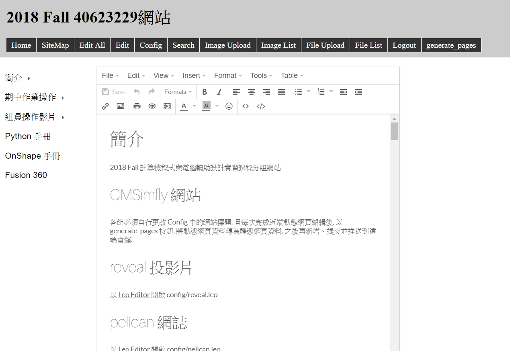

WK-2
課程內容：
學習如何用 ShareX 取圖、領取期中作業倉儲做管理並建立Onshape 帳號。
步驟：
1.領取期中作業倉儲後，在https://github.com/ 內可連結到 site-40623229 的倉儲。

2.將作業倉儲的分支(Branches)改為gh-pages。

3.將倉儲 clone下來，利用python wsgi.py的指令在近端動態網頁進行修改。
4.進入到近端動態網頁登入後，Edit All進行編輯。

5.利用 Image Upload 可將圖片上傳到近端動態網頁。
6.利用 File Upload 可將檔案上傳到近端動態網頁。

7.修改後按網頁的 generate_pages 將近端動態網頁轉為靜態網頁。
8.利用http-server.py去Go。
9.利用git add .將檔案新增上去，再利用git commit -m"add"提交之後，再git push將東西推上去。
課程影片
WK-1 << Previous Next >> WK-3